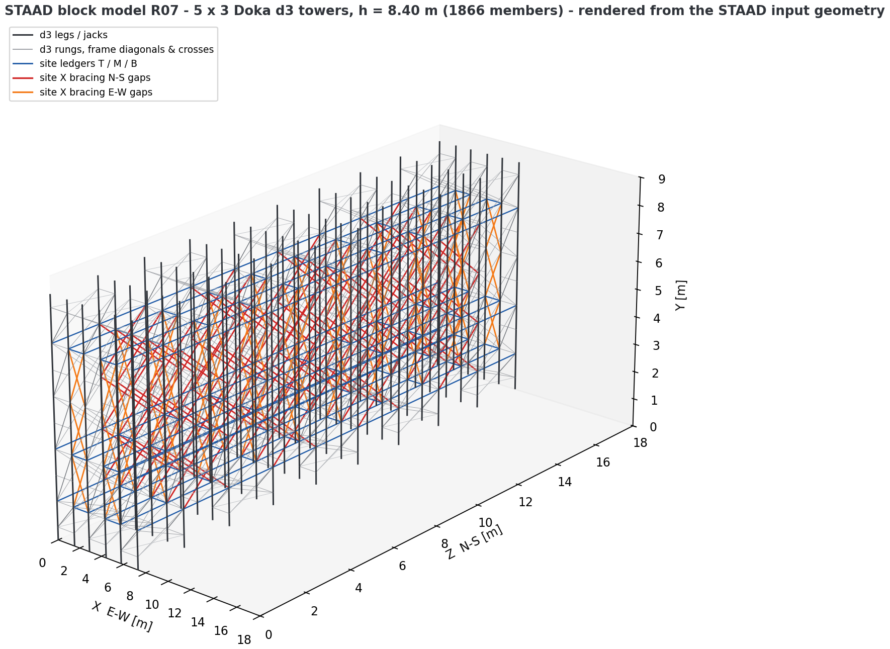
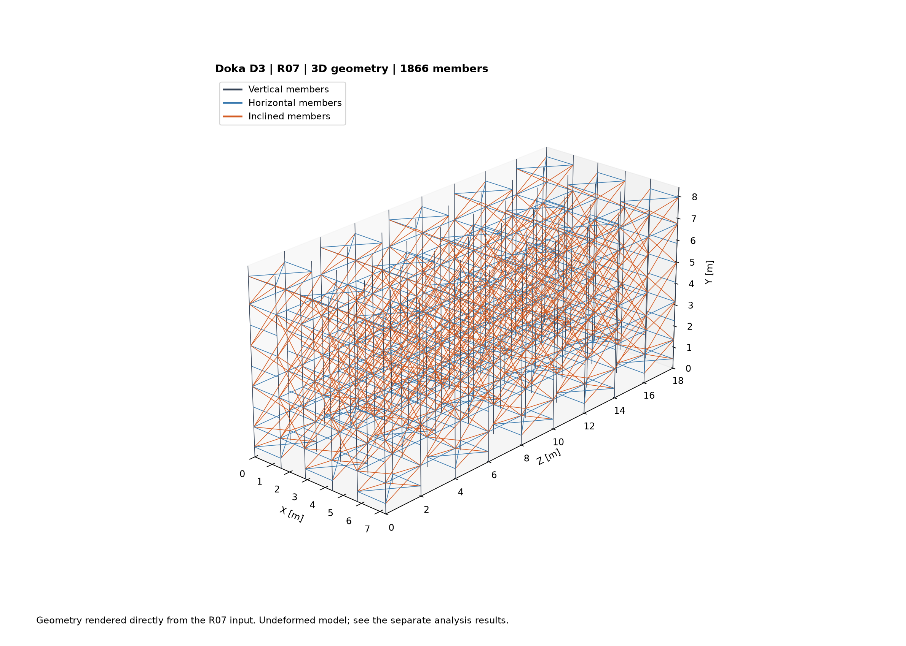
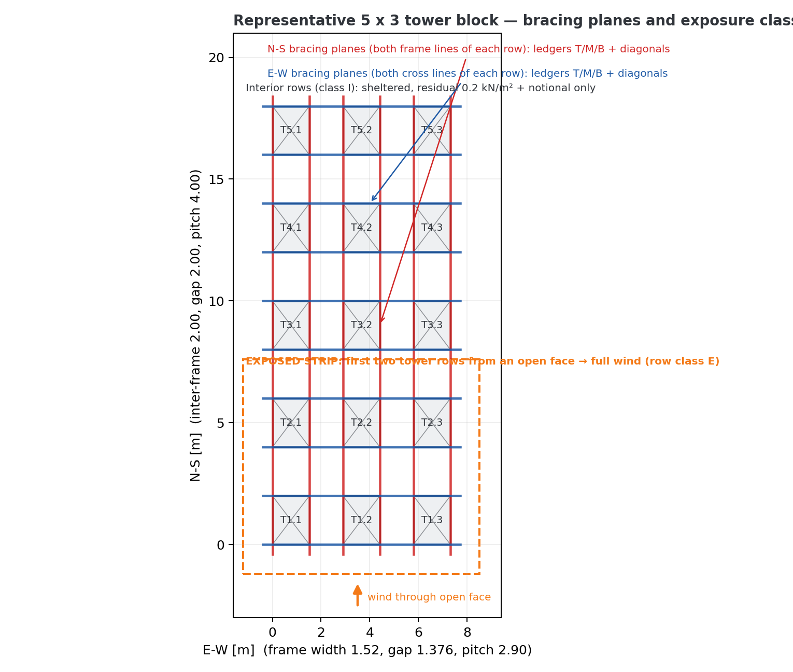
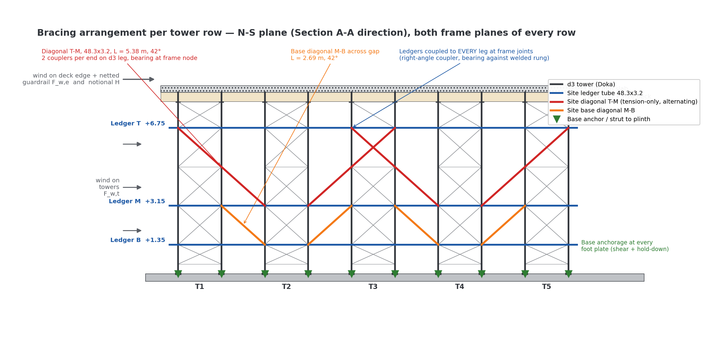

S.01 / Structural analysis & design
Formwork tower bracing
A coordinated analysis of tower groups, horizontal actions, bracing, and base anchorage for B1 slab formwork.
- MY ROLE
- Designer · Analysis & calculations
- DISCIPLINE
- Temporary works / Steel
- PERIOD
- September 2026
- ISSUE STATUS
- Design development · P02-DD

The task
The proprietary tower system and the site-installed bracing had to be considered together. The work focused on the horizontal load path, the bracing in both directions, and the forces carried into the base anchors.
My contribution
I prepared the supplementary calculation package and developed the STAAD block model. The R07 revision incorporates the welded frame diagonal and distinguishes the proprietary frame members from the site tube-and-coupler bracing.
What I delivered
- 3D analytical model with the tower frame and site bracing represented separately.
- Wind and horizontal-action assessment for the defined site conditions.
- Tower demand, bracing and coupler checks, support reactions, and anchorage demands.
- Plan and elevation figures coordinated with the calculation note.
The result
The package brings the bracing arrangement, calculated forces, and required confirmations into one reviewable design record.
Status: design development for TWC review and supplier confirmation. This supplements the proprietary formwork design; it is not a construction or use release.


